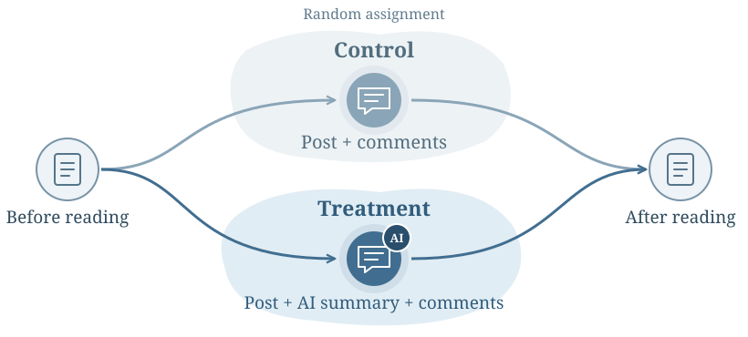

Causal inference
AI summaries & opinion extremity
Do AI-generated summaries affect opinion extremity in online discussions?
Results
| Outcome | Adjusted effect | 95% CI |
|---|---|---|
| Opinion extremity | 0.006 | [−0.159, 0.171] |
| Perceived public support | −0.231 | [−0.456, −0.005] |
230 survey participants read 3 topics each, giving 690 participant-topic observations
No clear evidence that summaries reduced opinion extremity.
Experiment design

Methods
Random assignment
Readers saw the same post and comments, with or without an AI summary
Before-and-after measures
Measured opinions and perceived public support for AI data centers, police body cameras, and capital punishment
Regression analysis
Models included baseline values and topic fixed effects. Standard errors were clustered by participant because each person answered three topics